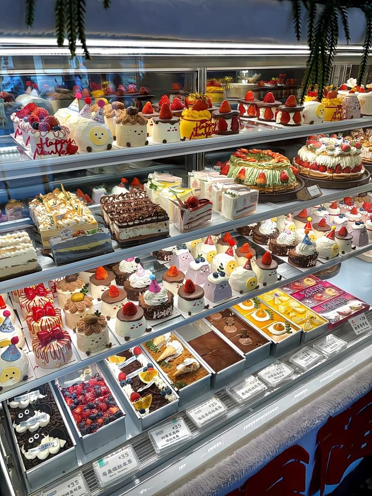

Take your time, settle in and explore the little details
behind the bakes, flavours and moments we love sharing.
Every recipe has a story, every bake has a memory,
and every little detail is made to bring people together.
Thoughtfully baked. Beautifully shared.

BAKED WITH LOVE
Stories & Flavours
BAKING STORIES6 NOVEMBER 20264 MIN READ
Why freshly baked bread makes every morning better
There is something special about the smell of fresh bread.
It fills the kitchen with warmth and makes an ordinary
morning feel a little more welcoming.
A good loaf begins with a few simple ingredients.
Flour, water, yeast and salt come together through
time, patience and careful preparation. The process
may look simple, but every little detail contributes
to the final result.
The beauty of a golden crust
The first thing you notice about freshly baked bread
is its crust. A beautifully baked loaf has a golden
outside with a gentle crunch, while the inside stays
soft and comforting. That contrast is what makes
every slice so satisfying.
Whether enjoyed with butter, paired with a savoury
filling or served alongside a favourite meal, fresh
bread has a way of bringing people together.
A LITTLE KITCHEN NOTE
Let freshly baked bread rest before slicing.
This helps the inside settle and makes each
slice easier to enjoy.
A simple pleasure worth slowing down for
In a busy day, small routines can make a difference.
A warm slice of bread with your morning coffee or
breakfast is one of those simple pleasures that
deserves a little time and attention.
At Buttercup Bakehouse, we believe that everyday
favourites deserve the same care as the most
elaborate creations.
01 / 06BAKED WITH LOVE, ALWAYS
SWEET INSPIRATION4 NOVEMBER 20263 MIN READ
Little celebrations deserve something sweet
Not every celebration needs a grand occasion.
Sometimes, the smallest moments become the
sweetest memories when there is something
delicious to share.
A birthday, a family get-together, a personal
achievement or an unexpected visit from a friend
can all become reasons to bring out a little treat.
These moments remind us that celebrations are
really about the people we share them with.
Making everyday moments feel special
A beautifully decorated cupcake or a freshly
prepared cake can add a thoughtful touch to an
ordinary afternoon. The presentation, flavour
and care behind a bake can make even a simple
gathering feel memorable.
Choosing something that suits the occasion is
part of the fun. Some moments call for delicate
flavours, while others deserve rich chocolate,
fresh fruit or a colourful design.
OUR LITTLE REMINDER
You do not need a special date on the calendar
to make someone feel special.
Sweetness is better when shared
The best part of a celebration is often the time
spent together. Sharing a cake, passing around
cupcakes or enjoying a favourite pastry gives
everyone a reason to pause and connect.
So the next time a little moment comes along,
make room for something sweet.
02 / 06BAKED WITH LOVE, ALWAYS
KITCHEN NOTES1 NOVEMBER 20265 MIN READ
The magic of simple ingredients and thoughtful baking
Beautiful baking does not always begin with
complicated recipes. Often, it starts with
familiar ingredients, a little creativity
and the care taken at every step.
Flour, butter, sugar, eggs and a few carefully
chosen additions can become something wonderful.
The secret is understanding how ingredients work
together and giving them the attention they need.
Quality makes a difference
Ingredients influence the texture, aroma and
flavour of every bake. Fresh ingredients and
thoughtful combinations help create treats
that are balanced and enjoyable.
Measuring carefully, preparing ingredients
beforehand and following each step with patience
can make the baking process more consistent.
Patience is part of the recipe
Baking is a process that rewards patience.
Giving dough enough time to rest, allowing
cakes to cool properly and checking the oven
at the right moment all contribute to a better
result.
FROM OUR KITCHEN
Start with good ingredients, take your time
and enjoy the process as much as the result.
Simple does not mean ordinary
Sometimes the most memorable bakes are the
familiar ones. A soft cookie, a buttery pastry
or a simple cake can bring just as much happiness
as an elaborate creation.
03 / 06BAKED WITH LOVE, ALWAYS
BAKER'S JOURNAL29 OCTOBER 20264 MIN READ
Flaky, buttery and golden: The beauty of a perfect croissant
A croissant is more than a breakfast favourite.
Its delicate layers, golden finish and buttery
aroma make it one of the most loved bakery treats.
Creating those layers takes time and careful
preparation. The dough and butter are folded
together through a process that creates the
delicate structure croissants are known for.
Layers that make every bite special
The beauty of a croissant is in its texture.
The outside should feel crisp and delicate,
while the inside remains soft and airy.
Each layer contributes to that familiar
flaky bite.
Temperature and timing matter throughout
preparation. Keeping the dough and butter
at the right consistency helps create
well-defined layers.
The importance of patience
Good pastry takes time. Resting, folding,
shaping and proofing are all important
parts of the process. Rushing these steps
can affect the final texture.
BAKER'S NOTE
The little details matter. Careful folding
and proper resting help create those
beautiful pastry layers.
A timeless bakery favourite
Enjoyed plain or paired with a favourite
filling, a croissant is a simple treat
that feels special at any time of day.
04 / 06BAKED WITH LOVE, ALWAYS
SWEET MOMENTS26 OCTOBER 20263 MIN READ
A little chocolate can make an ordinary day special
Rich, comforting and wonderfully familiar,
chocolate has a special place in the world
of baking. It can turn a simple treat into
something worth looking forward to.
From soft chocolate cakes to delicate pastries
and freshly baked cookies, chocolate works
beautifully in many different forms. Its
flavour can be deep and rich or light and
balanced, depending on how it is used.
Finding the right balance
A good chocolate bake is about more than
sweetness. The flavour should feel balanced,
with the richness of chocolate complemented
by the texture and other ingredients.
Some recipes pair chocolate with vanilla,
while others use fruit, nuts or a gentle
touch of coffee to create a different
flavour experience.
A treat for every kind of moment
Chocolate cakes are a favourite for birthdays
and celebrations, while cookies and brownies
are perfect for a quieter afternoon.
There is always a way to enjoy a little
chocolate.
A SWEET THOUGHT
Sometimes a small chocolate treat is all
it takes to make an ordinary afternoon
feel a little brighter.
05 / 06BAKED WITH LOVE, ALWAYS
KITCHEN NOTES22 OCTOBER 20265 MIN READ
Cookies, comfort and memories made in the kitchen
Some of the happiest kitchen memories begin
with a simple batch of cookies. The familiar
smell, the first warm bite and the joy of
sharing them make cookies a timeless favourite.
Cookies are wonderfully versatile. They can
be soft or crisp, simple or filled with
chocolate chips, nuts and other favourite
additions. Every variation brings its
own little character.
The joy of homemade treats
Preparing cookies is a lovely way to spend
time in the kitchen. Measuring ingredients,
mixing the dough and shaping each cookie
are small steps that come together to
create something enjoyable.
Even a familiar recipe can feel different
with a small change in flavour or texture.
That is part of what makes baking so
enjoyable: there is always room to try
something new.
Made to be shared
Cookies are easy to share and perfect
for everyday moments. They make thoughtful
additions to a tea-time table, a small
gift or a simple treat after a long day.
ONE LAST BITE
The best recipes are often the ones
that bring people together.
Whether you enjoy them fresh from the oven
or save a few for later, cookies have a
special way of making little moments sweeter.
06 / 06BAKED WITH LOVE, ALWAYS
THANK YOU FOR READING
Until the next little story.
We hope you enjoyed this little visit to our
world of baking. There is always something
fresh coming from our kitchen.